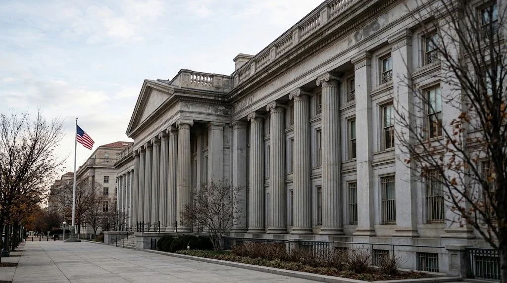

Dollar Holds Near 19-Month High as Fed Hike Bets Build Before 30-Year Treasury Auction
Futures price an 87% chance of a December rate increase while U.S. stocks rallied on a day the Treasury market was closed. The Treasury sells a new 30-year bond on Thursday.

The U.S. dollar held near its strongest level since April 2025 in Asian trading on Thursday, November 12, as futures priced a high probability that the Federal Reserve will raise interest rates again next month. The Reuters dollar index stood at 102.87 after rising 0.6% on Wednesday, according to Reuters reporting carried by Yahoo Finance. CME FedWatch put the chance of a quarter-point increase at the December 9 meeting at 87.3%, with a 12.7% chance of a half-point move.
The positioning arrives after an unusual session. Wall Street rallied on Wednesday, with the S&P 500 up 1.3%, the Nasdaq Composite up 1.6% at 25,466.19 and the Dow Jones Industrial Average up 0.5%, according to Investing.com. Treasury markets were closed for Veterans Day, so bond yields did not trade during the equity rally. The Treasury auctions a new 30-year bond on Thursday, a test of investor demand for long-dated debt with benchmark yields near 5%.
What the market data show
Dollar measures differ by provider. The Reuters index at 102.87 was described as steady in Asian trade. The Rio Times, citing a live board, reported a dollar index of 103.041, up 0.79%. The two figures reflect different indexes and observation times, and both point to the same direction: the dollar is at or near its highest level in about 19 months.
Equities reversed part of Tuesday's decline. Investing.com reported that the Nasdaq fell 0.7%, the S&P 500 lost 0.4% and the Dow dropped 0.3% on Tuesday. The Wednesday gains were led by artificial intelligence and chip stocks, including a rally in CoreWeave after its forecast, which TTN Finance covered in its report on CoreWeave's third-quarter results.
Asian markets were mixed on Thursday. Reuters reported that Japan's Nikkei 225 rose 0.5%, Taiwan shares gained 0.5% and South Korea's Kospi added 0.2%, while MSCI's Asia-Pacific index excluding Japan fell 0.1%. S&P 500 e-mini futures slipped 0.4% after Nvidia shares fell sharply in after-hours trading on reports about its board, a development covered in TTN Finance's report on the reported board deliberations at Nvidia.
Why December is now the central question
The Fed raised its policy rate by a quarter point in September, its first increase in three years, and kept it unchanged in October, according to Investing.com. TTN Finance reported on the October decision and its two dissents in its coverage of the Fed's October hold. Since then, October consumer prices rose 0.4% from September, with core prices up 0.3%, as detailed in the report on the October CPI release.
Futures pricing has moved quickly. On Tuesday evening, CME FedWatch showed an 88.8% chance of a December quarter-point increase, up from about 72% a week earlier, according to Investing.com. The probability of a half-point increase was 11.2% at that point and 12.7% in Reuters' Thursday figures. Both readings show that markets no longer price a pause at the December meeting.
Fed officials have supported the repricing. Investing.com reported that Governor Christopher Waller said the Fed ought to hike in December, citing the risk from sticky inflation, and that Philadelphia Fed President Anna Paulson said she supports further gradual tightening. A separate Investing.com report said Dallas Fed President Lorie Logan argued the central bank needs at least two more quarter-point increases. Those are individual views rather than committee decisions, and the outcome depends on data due before the meeting.
A bond market that has not yet reacted
The closure of the Treasury market on Wednesday leaves a gap in the price record. The 10-year yield was last quoted near 5% in the sources reviewed, including The Rio Times and an Investing.com market widget showing 4.992%. These are last-quote figures and not official closing yields. Yield levels for the 30-year bond differed between providers, so this article does not give one.
The Treasury's tentative auction schedule lists the 30-year bond auction for Thursday, November 12, with settlement on Monday, November 16. The bond matures on November 15, 2056, and the schedule describes it as a new issue rather than a reopening. The schedule does not list the offering size.
Auctions matter in a rising-rate environment because they reveal what price buyers require to absorb new supply. A weak result, in which the yield comes in above where the bond traded just before the sale, can push yields higher across the curve. A strong result can ease pressure. Neither outcome is predictable from the data available before the sale.
Other markets
Gold fell below $4,000 an ounce, with The Rio Times reporting a decline of 1.49% to $3,979 and attributing the move to higher yields. That report's own live board showed a different figure, so the percentage move should be treated as approximate. Higher yields raise the opportunity cost of holding gold, which pays no interest, but a single day's move does not establish a trend.
Oil was lower. Investing.com reported that Brent briefly fell below $90 a barrel on Tuesday for the first time since August, and Wednesday quotes in the sources reviewed placed it in the low $90s. Energy prices matter for the Fed because they feed headline inflation, a link explained in TTN Finance's analysis of the dollar and growth risks after the midterms.
What to watch next
Several events will test the current pricing. The 30-year auction is the first. The Fed's December 8 to 9 meeting is the second, and the data released before it will determine whether the 25-basis-point view holds or the larger move gains weight. Nvidia is scheduled to report quarterly results on November 17, and its outcome is likely to influence whether the equity rally can continue while yields sit near 5%.
The relationship between a stronger dollar and higher yields is not guaranteed to persist. If yields stabilize, dollar strength could fade without any change in Fed policy. If they rise further, equity valuations, which depend on discounted future earnings, face more pressure. The coming sessions will show which of those paths markets choose.
Sources and methodology
- Reuters via Yahoo Finance, "Asian stocks fragile, Nvidia plummets as board to decide CEO's fate," November 12, 2026
- Investing.com, "Wall Street ends higher, Nasdaq adds over 1.5% as AI trade comes back to life," November 11, 2026
- Investing.com, "Fed rate hike odds in December at 88% after hot CPI - CME FedWatch," November 10, 2026
- The Rio Times, "Global economy briefing, November 12, 2026"
- U.S. Department of the Treasury, Tentative Auction Schedule of U.S. Treasury Securities
- Nvidia, "NVIDIA Sets Conference Call for Third-Quarter Financial Results," October 28, 2026